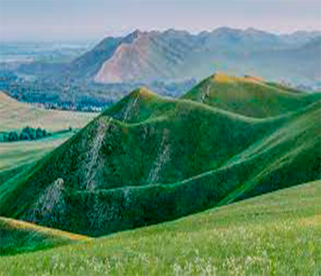

Mountain
Mountain - a form of relief, an isolated sharp rise in terrain with pronounced slopes and a foot or peak in a mountainous country. By the nature of the peaks, peaked, domed, plateau-s haped and other mountains are distinguished. The tops of the seamounts may be islands. Some mountains have been settled for a very long time. In the Alps, even before their development by the Romans, there were settlements of Ligures, Celts, Retes, Illyrians. The difficulty of existence in the mountains leads to the sparseness of the population in them and to the slow growth of the population, and often to its decrease, especially since migration from villages to cities began to develop. For example, the high Alpine departments of France are characterized by the largest population decline in the country.
In Europe, almost all industrial areas are occupied by lowlands and low hilly countries. In the United States of America, most of the population lives below 300 meters above sea level; the population engaged in trade and industry, cultivating cotton, rice and sugar cane, lives below 150 meters. Only gradually does the population occupy greater heights. The average height at which the US population lived in 1870 was 210 meters, and in 1890 - 240 meters (the average height of the US territory is 750 meters). Above 900 meters in the United States lived: in 1870 - 0.4 million people, in 1880 - 0.8 million, in 1890 - 1.5 million, in 1900 - 2.1 million people. The decrease in population density with height depends not only on climatic conditions, but also on the difficulty of communications in mountainous conditions.